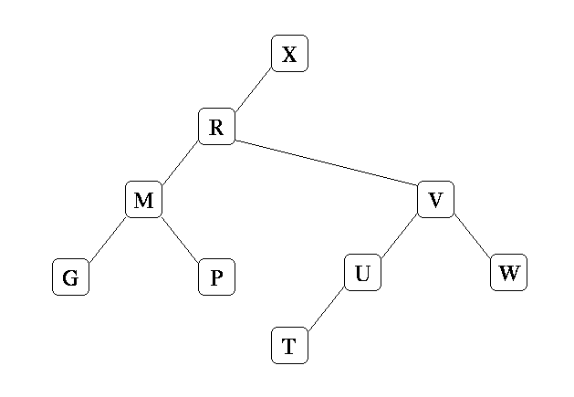

typedef struct bstreenode {
char *key;
Jval val;
struct bstreenode *left;
struct bstreenode *right;
} BstreeNode;
Write a function nnodes, which returns the number of nodes of
a binary search tree. The prototype is:
int nnodes(BstreeNode *b);Note -- this is a pointer to the root of the tree (NULL if the tree is empty).